🛸 盖亚计划:失落的舰队
Gaia Project: The Lost Fleet · 《盖亚计划》扩展 · 设计:Helge Ostertag & Jens Drogemüller · Feuerland Spiele 出版 · 1–4 人(官方中文扩展规则书全文转录,需配合基础游戏)
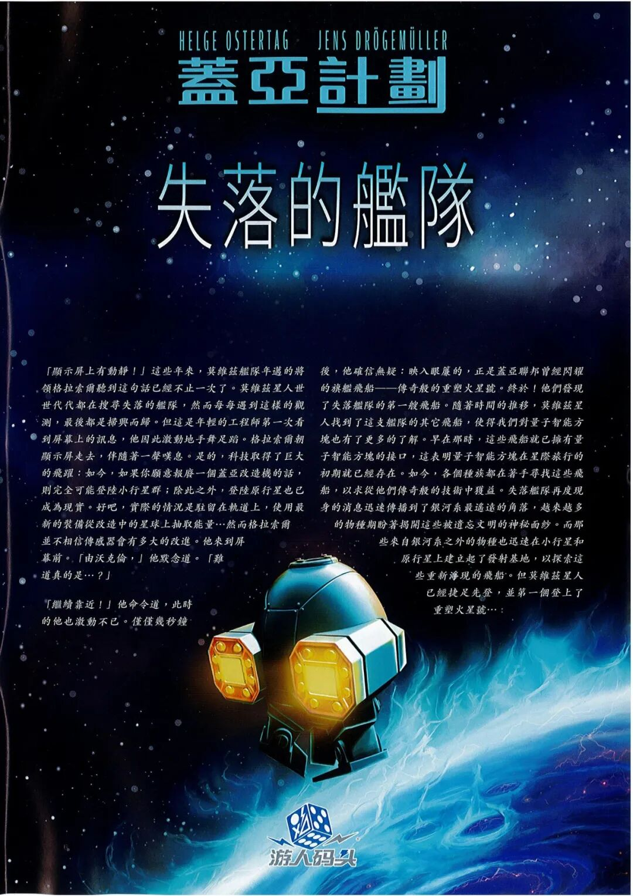
本页整理自微信公众号「桌游怎么玩」【桌游规则】盖亚计划:失落的舰队一文发布的《盖亚计划:失落的舰队》(Gaia Project: The Lost Fleet,Helge Ostertag & Jens Drogemüller 设计,Feuerland Spiele 2024 出版)官方中文扩展规则书扫描件(规则来源:斯虹;中文翻译:周天易)。扩展全书 16 页逐页全文转录(封面背景故事、扩展配件、简介与初次加入本扩展前的准备、可变版图布局 2/3/4 人设置、面板设置变更、失落舰队的四艘飞船、改造面板与探索面板、放置初始建筑、新行动 11) 探索与 12) 调查一个圣器、基础游戏行动的变更、特殊行动/免费行动变更、智脑单人游戏规则变更与难度等级、附录:4 个新种族(焊修智械/莫维兹星人/太空巨人/暗黑星人)/新行动格/新回合助推器/新计分板块/新科技/新联邦标记/圣器、全部十八个种族概览),原书扫描图随文嵌入——点击任意图片即可放大查看。需配合基础游戏《盖亚计划》(站内官方中文规则书转录页)使用。规则内容归版权方所有,转录仅供个人学习查阅。
整理说明:扫描页经双遍 OCR 转录并逐项复核。基础版(游人码头繁体版)与扩展版(简体版,另一翻译团队)用语存在差异,照录两版原文:如盖亚改造单元/盖亚改造机、矿物基地/矿产基地等。种族名以第 16 页十八种族总览(高分辨率页,置信度高)为准:4 个新种族为焊修智械、莫维兹星人、太空巨人、暗黑星人;四艘失落舰队飞船为黄昏号、反叛号、重塑火星号、日蚀号。第 12 页难度等级表「王智腦 10 分(沒有變化)」数值照录存疑;个别无法确认的字以〔?〕标注,〔图:〕〔侧注〕〔示例〕〔图注〕为版面插图/旁注/图注占位说明。
蓋亞計劃:失落的艦隊(Gaia Project: The Lost Fleet) · HELGE OSTERTAG / JENS DROGEMÜLLER
「顯示屏上有動静!」這些年來,莫維茲星人聽到格拉索爾喊這句話已經不止一次了。莫維茲星人世世代代都在搜尋失落的艦隊,然而每每遇到這樣的觀測,最後都是無獲而歸。但這是年輕的工程師第一次看到屏幕上的訊息,他因此激動得手舞足蹈。格拉索爾朝顯示屏走去,伴隨著一聲嘆息。是的,科技取得了巨大的飛躍:如今,如果你操控一個蓋亞改造機的話,則完全可能登陸小行星群;除此之外,登陸原行星也已成為現實。好吧,實際的情況是留在軌道上,使用最新的裝備從改造中的星球上抽取能量。然而格拉索爾不相信傳感器會有多大的改進。他來到屏幕前。「由沃克隕〔?〕,」他默念道。「難道真的是……?」
「繼續靠近!」他命令道,此時的他也激動不已。幾秒鐘後,他確信無疑:映入眼簾的,正是蓋亞聯邦曾經閃耀的旗艦飛船——傳奇般的重塑火星號。終於!他們發現了失落艦隊的第一艘飛船。隨著時間的推移,莫維茲星人找到了這支艦隊的其它飛船,使得我們對量子智能方塊也有了更多的了解。早在那時,這些飛船就已有量子智能方塊的接口,這表明量子智能方塊在星際旅行的初期就已存在。如今,各個種族都在著手尋找這些飛船,以求從它們傳奇般的技術中獲益。失落艦隊再度現身的消息迅速傳播到了銀河系最遙遠的角落,越來越多的物種期盼著揭開這些被遺忘文明的神秘面紗。而那些來自銀河系之外的物種也迅速在小行星和原行星上建立起了發射基地,以探索這些重新浮現的飛船。但莫維茲星人已經捷足先登,第一個登上了重塑火星號……
〔圖:封面美術——星雲中的失落艦隊飛船〕
〔頁腳:游人碼頭〕
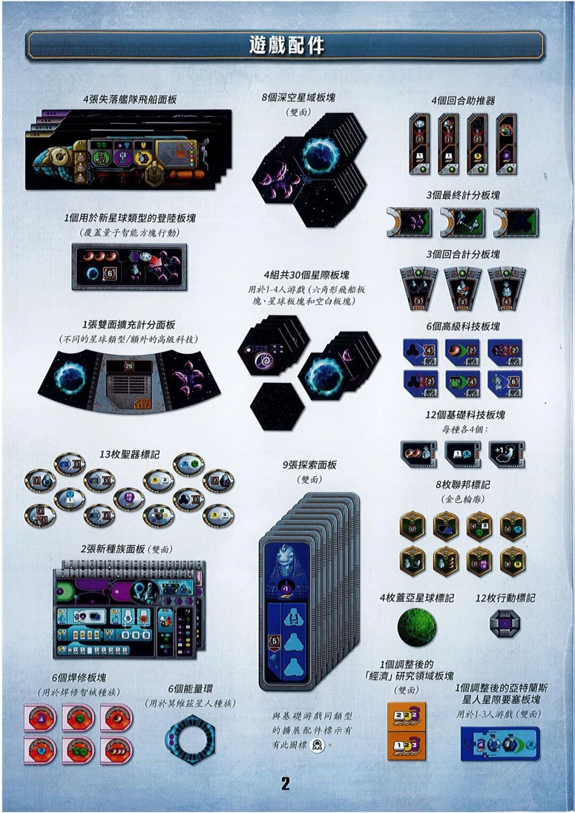
規則來源:斯虹
遊戲配件
- 4 張失落艦隊飛船面板(雙面)
- 8 個深空星域板塊
- 4 個回合助推器
- 3 個最終計分板塊
- 1 個用於新星球類型的登陸板塊(覆蓋量子智能方塊行動)
- 3 個回合計分板塊
- 4 組共 30 個星際板塊,用於 1-4 人遊戲(六角形飛船板塊、星球板塊和空白板塊)
- 1 張雙面擴充計分面板
- 6 個高級科技板塊(不同的星球類型/額外的高級科技)
- 12 個基礎科技板塊,每種各 4 個
- 13 枚聖器標記
- 9 張探索面板(雙面)
- 8 枚聯邦標記(金色輪廓)
- 2 張新種族面板(雙面)
- 4 枚蓋亞星球標記
- 12 枚行動標記
- 1 個調整後的「經濟」研究領域板塊
- 6 個焊修板塊(用於焊修智械種族)
- 6 個能量環(雙面)(用於莫維茲星人種族)
- 1 個調整後的亞特蘭斯星人星際要塞板塊(雙面),用於 1-3 人遊戲
與基礎遊戲同類型的擴展配件標示有〔圖標〕。
〔圖:配件實拍圖,含各組件數量角標〕
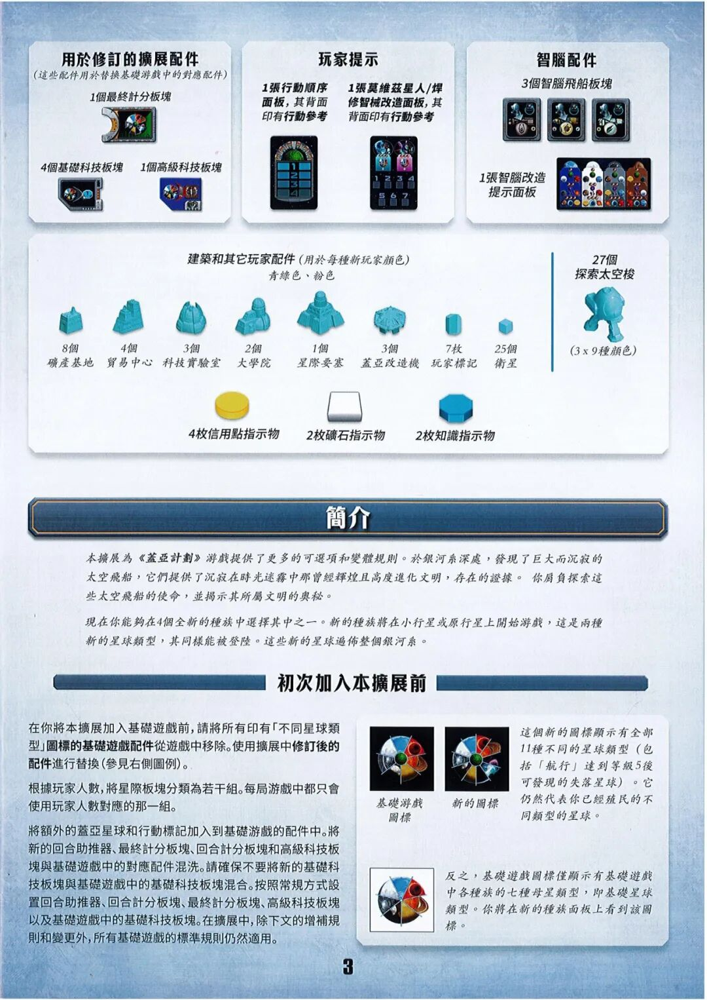
用於擴展的配件
玩家提示
- 1 張行動順序卡牌
- 1 張莫維茲星人/焊修智械改造提示面板,其背面印有行動參考
- 1 個最終計分板塊
- 4 個基礎科技板塊
- 1 個高級科技板塊
智腦配件(這些配件用於替換基礎遊戲中的對應配件)
- 3 個智腦飛船板塊
- 1 張智腦改造提示面板
建築和其它玩家配件(用於每種新玩家顏色:青色、粉色)
- 8 個礦產基地
- 4 個貿易中心
- 3 個科技實驗室
- 2 個大學院
- 1 個星際要塞
- 3 個蓋亞改造機
- 7 枚玩家標記
- 25 個衛星
- 27 個探索太空梭(3×9 種顏色)
- 4 枚信用點指示物
- 2 枚礦石指示物
- 2 枚知識指示物
簡介
本擴展為《蓋亞計劃》遊戲提供了更多的可選項和變體規則。於銀河系深處,發現了巨大而沉寂的太空飛船,它們提供了沉寂在時光迷霧中那曾經輝煌且高度進化文明存在的證據。你肩負探索這些太空飛船的使命,揭示其所屬文明的奧秘。
現在你能夠在 4 個全新的種族中選擇其中之一。新的種族將在小行星或原行星上開始遊戲,這是兩種全新的星球類型。
初次加入本擴展前
- 在你將本擴展加入基礎遊戲前,請將所有印有「不同星球類型」圖標的基礎遊戲配件從遊戲中移除。使用擴展中修訂後的配件進行替換(參見右側圖例)。
- 根據玩家人數,將星際板塊分類為若干組。每局遊戲中都只會使用玩家人數對應的那一組。
- 將額外的蓋亞星球和行動標記加入到基礎遊戲的配件中。將新的回合助推器、最終計分板塊、回合計分板塊和高級科技板塊與基礎遊戲中的對應配件混洗。請確保不要將新的基礎科技板塊與基礎遊戲中的基礎科技板塊混合。按照常規方式設置回合助推器、回合計分板塊、最終計分板塊、高級科技板塊以及基礎遊戲中的基礎科技板塊。
- 在擴展中,除下文的增補規則和變更外,所有基礎遊戲的規則仍然適用。
〔側注〕這個新的圖標顯示有全部 11 種不同的星球類型(包括「航行」達到等級 5 後可發現的失落星球)。它仍然代表你已經殖民的不同類型的星球。
〔側注〕反之,基礎遊戲圖標顯示有基礎遊戲中各種族的七種母星類型,即基礎星球類型。你將在新的種族面板上看到該圖標。
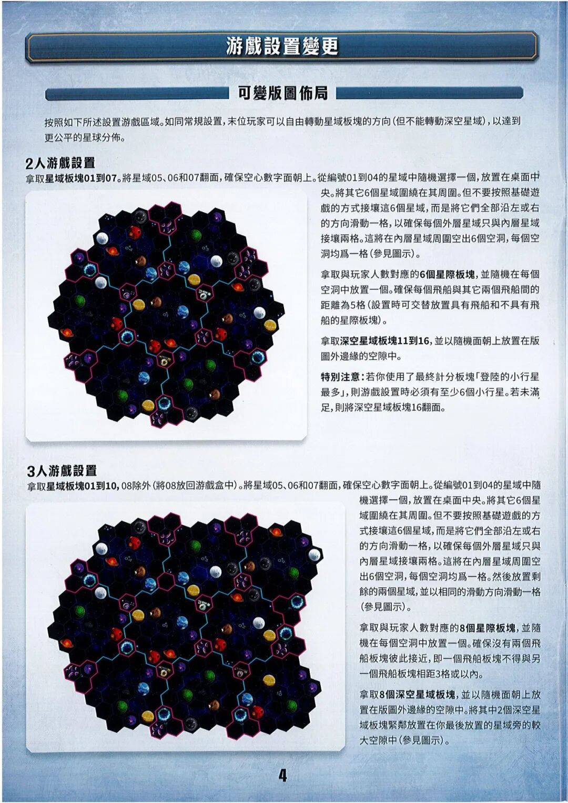
遊戲設置變更:可變版圖佈局
按照如下所述设置游戏区域。如同常规设置,末位玩家可以自由转动星域板块的方向(但不能转动深空星域),以达到更公平的星球分布。
2 人游戏设置
- 拿取星域板块 01 到 07。将星域 05、06 和 07 翻面,确保空心数字面朝上。从编号 01 到 04 的星域中随机选择一个,放置在桌面中央。将其它 6 个星域围在其周围。但不要按照基础游戏的方式接壤这 6 个星域,而是将它们全部沿左或右的方向滑动一格,以确保每个外层星域只与内层星域接壤两格。这将在内层星域周围空出 6 个空洞,每个空洞均为一格(参见图示)。
- 拿取与玩家人数对应的 6 个星际板块,随机在每个空洞中放置一个。确保每个飞船与其它两个飞船间的距离为 5 格(设置时可交替放置具有飞船和不具有飞船的星际板块)。
- 拿取深空星域板块 11 到 16,以随机面朝上放置在版图外缘的空隙中。
特别注意:若你使用了最终计分板块「登陆的小行星最多」,则游戏设置时必须有至少 6 个小行星。若未满足,则将深空星域板块 16 翻面。
3 人游戏设置
- 拿取星域板块 01 到 10,08 除外(将 08 放回游戏盒中)。将星域 05、06 和 07 翻面,确保空心数字面朝上。从编号 01 到 04 的星域中随机选择一个,放置在桌面中央。将其它 6 个星域围在其周围。但不要按照基础游戏的方式接壤这 6 个星域,而是将它们全部沿左或右的方向滑动一格,以确保每个外层星域只与内层星域接壤两格。这将在内层星域周围空出 6 个空洞,每个空洞均为一格。然后放置剩余的两个星域,以相同的滑动方向滑动一格(参见图示)。
- 拿取与玩家人数对应的 8 个星际板块,随机在每个空洞中放置一个。确保没有两个飞船板块彼此接近,即一个飞船板块不得与另一个飞船板块相距 3 格或以内。
- 拿取 8 个深空星域板块,以随机面朝上放置在版图外缘的空隙中。将其中 2 个深空星域板块放置在你最后放置的星域旁的较大空隙中(参见图示)。
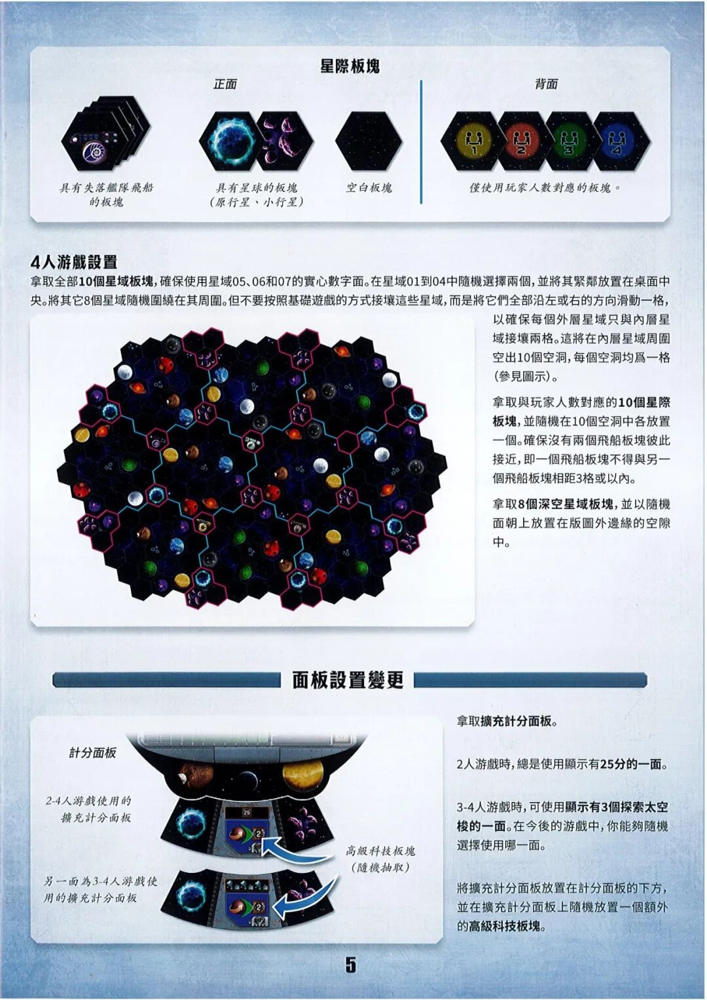
星際板塊
- 正面:具有失落艦隊飛船的板塊
- 背面:具有星球的板塊(原行星、小行星)/空白板塊
- 仅使用玩家人数对应的板块。〔图注:1/3/A 等数字角标〕
4 人游戏设置
- 拿取全部 10 个星域板块,确保使用星域 05、06 和 07 的实心数字面。在星域 01 到 04 中随机挑选两个,将其紧邻放置在桌面中央。将其它 8 个星域随机围在其周围。但不要按照基础游戏的方式接壤这些星域,而是将它们全部沿左或右的方向滑动一格,以确保每个外层星域只与内层星域接壤两格。这将在内层星域周围空出 10 个空洞,每个空洞均为一格(参见图示)。
- 拿取与玩家人数对应的 10 个星际板块,随机在 10 个空洞中各放置一个。确保没有两个飞船板块彼此接近,即一个飞船板块不得与另一个飞船板块相距 3 格或以内。
- 拿取 8 个深空星域板块,以随机面朝上放置在版图外缘的空隙中。
面板設置變更
计分面板
- 拿取扩充计分面板。
- 2 人游戏时,总是使用显示有 25 分的一面。
- 3-4 人游戏时,可使用显示有 3 个探索太空梭的一面。在今后的游戏中,你们可以随意挑选使用哪一面。
- 将扩充计分面板放置在计分面板的下方,在扩充计分面板上随机放置一个额外的高级科技板块。〔图注:高级科技板块(随机抽取);另一面为 3-4 人游戏使用的扩充计分面板〕
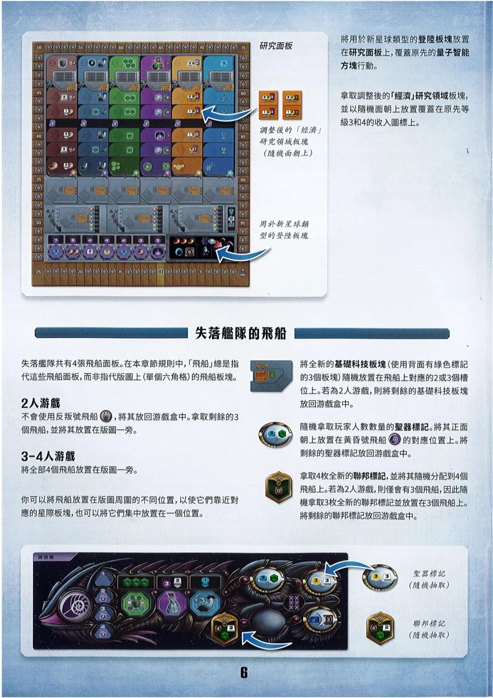
研究面板
- 将用于新星球类型的登陆板块放置在研究面板上,覆盖原先的量子智能方块行动。
- 拿取调整后的「经济」研究领域板块,以随机面朝上放置覆盖在原先等级 3 和 4 的收入图标上。〔图注:调整后的「经济」研究领域板块(随机面朝上);用于新星球类型的登陆板块〕
失落艦隊的飛船
失落舰队共有 4 张飞船面板。在本章节规则中,「飞船」总是指代这些飞船面板,而非指代版图上(单个六角格)的飞船板块。
- 将全新的基础科技板块(使用背面有绿色标记的 3 个板块)随机放置在飞船上对应的 2 或 3 个槽位上。若为 2 人游戏,则将剩余的基础科技板块放回游戏盒中。
2 人游戏
- 不会使用反叛号飞船,将其放回游戏盒中。拿取剩余的 3 个飞船,将其放置在版图一旁。
- 随机拿取玩家人数数量的圣器标记。将其正面朝上放置在黄昏号飞船的对应位置上。将剩余的圣器标记放回游戏盒中。
3-4 人游戏
- 将全部 4 个飞船放置在版图一旁。
- 拿取 4 枚全新的联邦标记,将其随机分配到 4 个飞船上。若为 2 人游戏,则会有 3 个飞船,因此随机拿取 3 枚全新的联邦标记放置在 3 个飞船上。将剩余的联邦标记放回游戏盒中。
你可以将飞船放置在版图周围的不同位置,以使它们靠近对应的星际板块,也可以将它们集中放置在一个位置。
〔图注〕圣器标记(随机抽取)、联邦标记(随机抽取)。
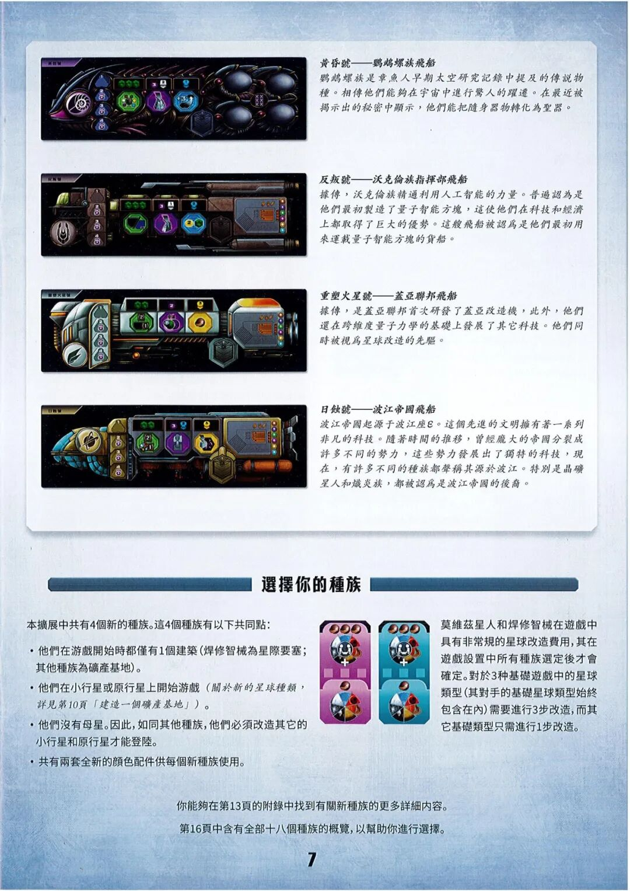
失落舰队的飞船(背景)
黃昏號——鸚鵡螺族飛船:鸚鵡螺族是章魚人早期太空研究記錄中提及的傳說物種。相傳他們能在宇宙中進行〔?〕。在最近被揭示出的秘密中顯示,他們能把隨身器物轉化為聖器。
反叛號——沃克隕〔?〕族指揮飛船:據傳,沃克隕族精通利用人工智能的力量。普遍認為是他們最初製造了量子智能方塊,這使他們在科技和經濟上都取得了巨大的優勢。這艘飛船被認為是他們最初用來運載量子智能方塊的貨船。
重塑火星號——蓋亞聯邦飛船:據傳,是蓋亞聯邦首次研發了蓋亞改造機,此外,他們還在跨維度量子力學的基礎上發展了其它科技。他們同時被視為星球改造的先驅。
〔?〕日號——波江帝國飛船:波江帝國起源於波江座〔?〕。這個先進的文明有著一系列非凡的科技。隨著時間的推移,曾經龐大的帝國分裂成許多不同的勢力,這些勢力發展出了獨特的科技,現在,有許多不同的種族都聲稱其源於波江。特別是晶星人和炎族,都被認為是波江帝國的後裔。
挑選你的種族
本擴展中共有 4 個新的種族。這 4 個種族有以下共同點:
- 他們在遊戲開始時都有 1 個建築(焊修智械為星際要塞;其他種族為礦產基地)。
- 他們在小行星或原行星上開始遊戲(關於新的星球種類,詳見第 10 頁「建造一個礦產基地」)。
- 他們沒有母星。因此,如同其他種族,他們必須改造其它的星球,才能登陸小行星和原行星。
- 共有兩套全新的顏色配件供每個新種族使用。
莫維茲星人和焊修智械在遊戲中具有非常規的星球改造費用,其在遊戲設置中所有種族選定後才會確定。對於 3 種基礎遊戲中的星球類型(其對手的基礎星球類型始終包含在內)需要進行 3 步改造,而對於其它基礎類型只需進行 1 步改造。
你能在第 13 頁的附錄中找到有關新種族的更多詳細內容。第 16 頁中含有全部十八個種族的概覽,以幫助你進行選擇。
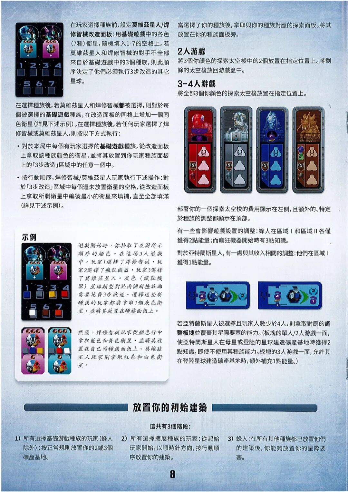
改造面板與探索面板設置
- 在玩家挑選種族前,設定莫維茲星人/焊修智械改造面板:用基礎遊戲中的各色(7 種)衛星,隨機填入 1-7 的空格上。若莫維茲星人和焊修智械的對手不全部來自於基礎遊戲中的 3 個種族,則此順序決定了他們必須執行 3 步改造的其它星球。
- 當挑選了你的種族後,拿取與你的種族對應的探索面板。將其放置在你的種族面板旁。
- 部署你的一個探索太空梭的費用顯示在左側,且額外的、特定於種族的調整都顯示在頂部。
- 有一些會影響遊戲設置的調整:蜂人在區域 I 和區域 II 各獲得 2 點能量;而瘋狂機器開始時有 3 點知識。
- 對於亞特蘭斯星人,有一處與其收入相關的調整:他們在區域 I 獲得 1 點能量。
- 若亞特蘭斯星人被挑選且玩家人數少於 4 人,則拿取對應的調整板塊覆蓋其星際要塞的能力。(板塊的單人/2 人遊戲一面,使亞特蘭斯星人在母星或登陸的星球建造礦產基地時獲得 2 點知識,即使不使用其種族能力。板塊的 3 人遊戲一面,允許其在登陸星球建造礦產基地時,額外補充 1 點能量。)
2 人遊戲:將 3 個你顏色的探索太空梭中的 2 個放置在指定位置上。將剩餘的太空梭放回遊戲盒中。
3-4 人遊戲:將全部 3 個你顏色的探索太空梭放置在指定位置上。
在挑選種族後,若莫維茲星人和焊修智械都被挑選,則對於每個被挑選的基礎遊戲種族,在改造面板的同格上增加一個同色衛星(詳見下述示例)。在挑選種族後,若任何玩家挑選了焊修智械或莫維茲星人,則按以下方式執行:
- 對於本局中每個有玩家挑選的基礎遊戲種族,從改造面板上拿取該種族顏色的衛星,將其放置到你玩家種族面板上的「3 步改造」區域中的任意一個中。
- 按行動順序,焊修智械/莫維茲星人玩家執行下述操作:對於「3 步改造」區域中每個還未放置衛星的空格,從改造面板上拿取所剩衛星中編號最小的衛星來填補,直至全部填滿(詳見下述示例)。
〔示例〕遊戲開始時,你抽取了左圖所示順序的顏色。在這場 3 人遊戲中,玩家 1 挑選了焊修智械,玩家 2 挑選了瘋狂機器,玩家 3 挑選了莫維茲星人。灰色(瘋狂機器)星球類型對於兩個新種族都需要花費 3 步改造。這些新種族的玩家都將拿取 1 個灰色衛星,將其放置在種族面板上。然後,焊修智械玩家從顏色行中拿取藍色和黃色衛星,將其放置在自己的種族面板上。莫維茲星人玩家則拿取紅色和白色衛星。
放置你的初始建築
這共有 3 個階段:
- 所有挑選基礎遊戲種族的玩家(蜂人除外):按正常規則放置你的 2 或 3 個礦產基地。
- 所有挑選擴展種族的玩家:起始玩家開始,以順時針方向,按行動順序放置你的建築。
- 蜂人:在所有其他種族都已放置他們的建築後,你能放置你的星際要塞。
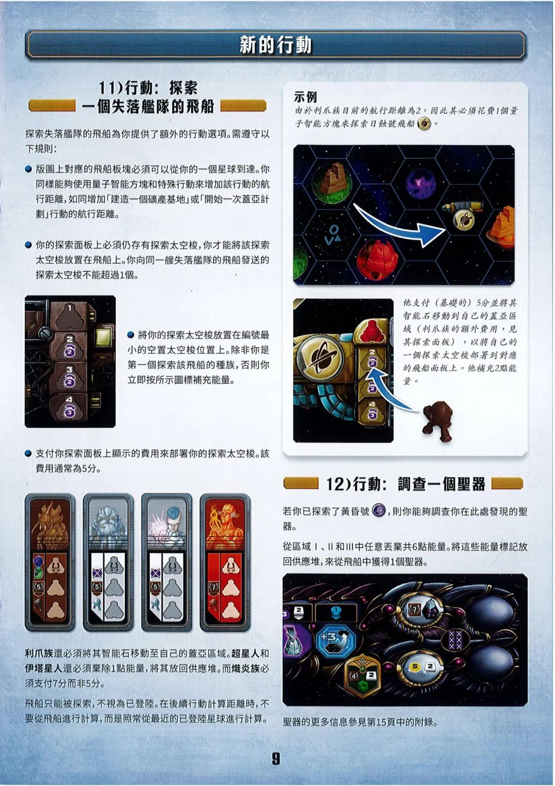
新的行動
11) 行動:探索
探索失落艦隊的飛船為你提供了額外的行動選項。需遵守以下規則:
- 版圖上對應的飛船板塊必須可以從你的一個星球到達。你同樣能使用量子智能方塊和特殊行動來增加該行動的航行距離,如同增加「建造一個礦產基地」或「開始一次蓋亞計劃」行動的航行距離。
- 你的探索面板上必須仍存有探索太空梭,你才能將該探索太空梭放置在飛船上。你向同一艘失落艦隊的飛船發送的探索太空梭不能超過 1 個。
- 將你的探索太空梭放置在編號最小的空置太空梭位置上。除非你是第一個探索該飛船的種族,否則你立即按所示圖標補充能量。
- 支付你探索面板上顯示的費用來部署你的探索太空梭。該費用通常為 5 分。
飛船只能被探索,不視為已登陸。在後續行動計算距離時,不要對飛船進行計算,而是照常從最近的已登陸星球進行計算。
〔示例〕由於利爪族目前的航行距離為 2,因此其必須花費 1 個量子智能方塊來探索〔?〕日號飛船。他支付(基礎的)5 分,將其智能石移動到自己的蓋亞區域(利爪族的額外費用,見其探索面板),以將自己的一個探索太空梭部署到對應的飛船面板上。他補充 2 點能量。
12) 行動:調查一個聖器
若你已探索了黃昏號,則你能調查你在此處發現的聖器。
從區域 I、II 和 III 中任意丟棄共 6 點能量。將這些能量標記放回供應堆,來從飛船中獲得 1 個聖器。
利爪族還必須將其智能石移動至自己的蓋亞區域。超星人〔?〕和伊塔星人還必須額外棄除 1 點能量,將其放回供應堆。而炎族必須支付 7 分而非 5 分。
聖器的更多信息參見第 15 頁中的附錄。
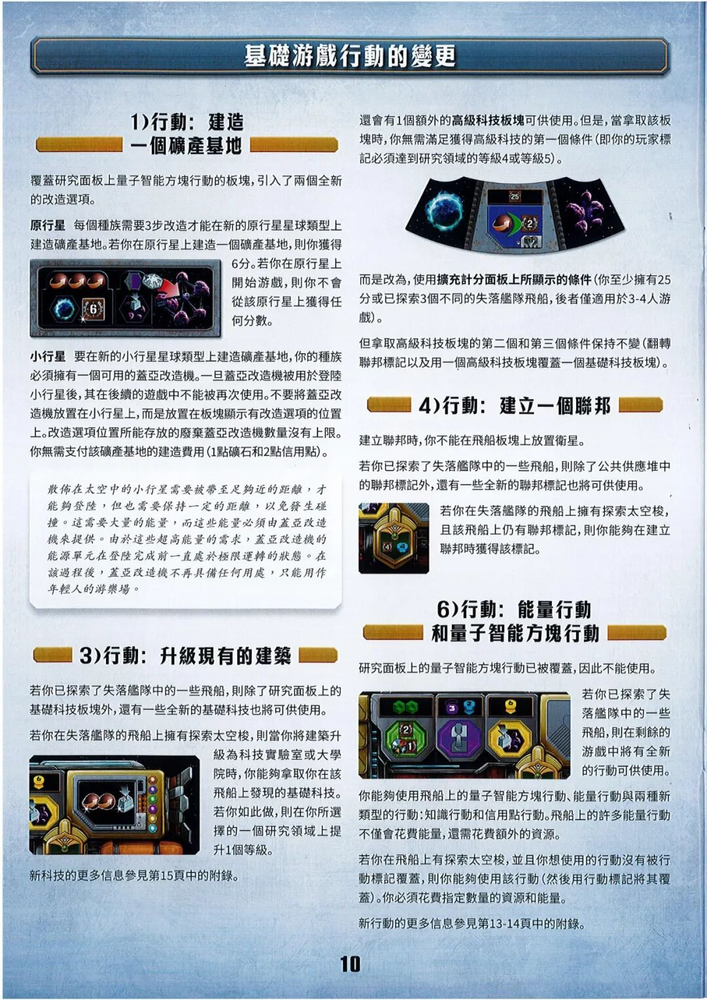
基礎遊戲行動的變更
1) 行動:建造一個礦產基地
覆蓋研究面板上量子智能方塊行動的板塊,引入了兩個全新的改造選項。
原行星:每個種族需要 3 步改造才能在新的原行星星球類型上建造礦產基地。若你在原行星上建造一個礦產基地,則你獲得 6 分。若你在原行星上開始遊戲,則你不會在該原行星上獲得任何分數。
小行星:要在新的小行星星球類型上建造礦產基地,你的種族必須有一個可用的蓋亞改造機。一旦蓋亞改造機被用於登陸小行星後,其在後續的遊戲中不能被再次使用。不要將蓋亞改造機放置在小行星上,而是放置在板塊顯示有改造選項的位置上。改造選項位置所能存放的蓋亞改造機數量沒有上限。
你無需支付該礦產基地的建造費用(1 點礦石和 2 點信用點)。
〔側注〕散佈在太空中的小行星需要被帶至足夠近的距離,才能登陸,但也需要保持一定的距離,以免發生碰撞。這需要大量的能量,而這些能量必須由蓋亞改造機來提供。由於這些超高能量的需求,蓋亞改造機的能源單元在登陸完成前一直處於極限運轉的狀態。在該過程後,蓋亞改造機不再具備任何用處,只能用作年輕人的遊樂場。
3) 行動:升級現有的建築
若你已探索了失落艦隊中的一些飛船,則除了研究面板上的基礎科技板塊外,還有一些全新的基礎科技也將可供使用。若你在失落艦隊的飛船上有探索太空梭,則當你將建築升級為科技實驗室或大學院時,你能拿取你在該飛船上發現的基礎科技。若你如此做,則在你所選的一個研究領域上提升 1 個等級。新科技的更多信息參見第 15 頁中的附錄。
〔圖注〕還會有 1 個額外的高級科技板塊可供使用。但是,當拿取該板塊時,你無需滿足獲得高級科技的第一個條件(即你的玩家標記必須達到研究領域的等級 4 或等級 5),而是改為使用擴充計分面板上所顯示的條件(你至少有 25 分或已探索 3 個不同的失落艦隊飛船,後者僅適用於 3-4 人遊戲)。但拿取高級科技板塊的第二個和第三個條件保持不變(翻轉聯邦標記以及用一個高級科技板塊覆蓋一個基礎科技板塊)。
4) 行動:建立一個聯邦
建立聯邦時,你不能在飛船板塊上放置衛星。
若你已探索了失落艦隊中的一些飛船,則除了公共供應堆中的聯邦標記外,還有一些全新的聯邦標記也將可供使用。若你在失落艦隊的飛船上有探索太空梭,且該飛船上仍有聯邦標記,則你能在建立聯邦時獲得該標記。
6) 行動:能量行動和量子智能方塊行動
研究面板上的量子智能方塊行動已被覆蓋,因此不能使用。
若你已探索了失落艦隊中的一些飛船,則在剩餘的遊戲中將有全新的行動可供使用。
你能使用飛船上的量子智能方塊行動、能量行動與兩種新類型的行動:知識行動和信用點行動。飛船上的許多能量行動不會花費能量,還需花費額外的資源。
若你在飛船上有探索太空梭,且你想使用的行動沒有被行動標記覆蓋,則你能使用該行動(然後用行動標記將其覆蓋)。你必須花費指定數量的資源和能量。
新行動的更多信息參見第 13-14 頁中的附錄。
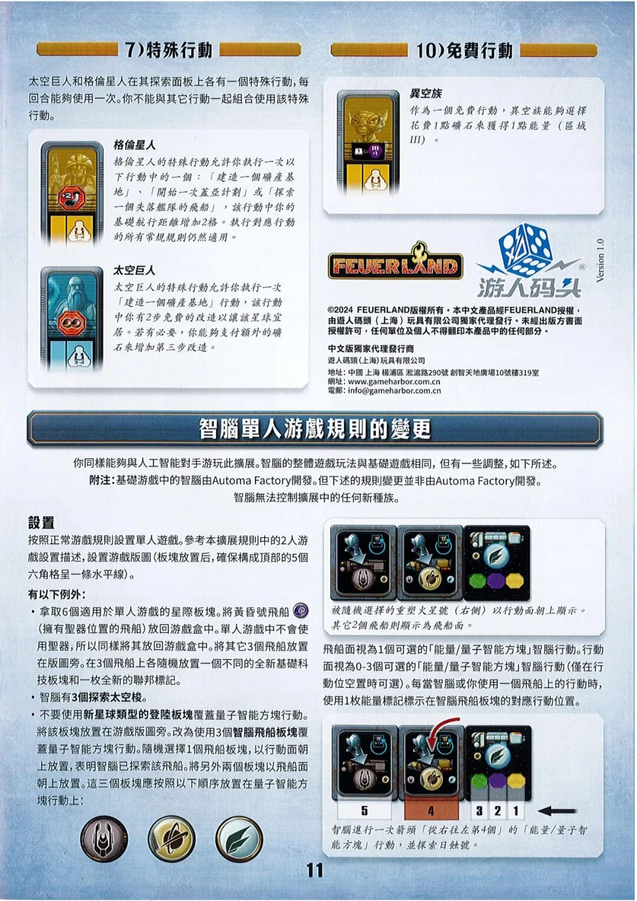
7) 特殊行動
太空巨人和格倫星人在其探索面板上各有一個特殊行動,每回合能使用一次。你不能與其它行動一起組合使用該特殊行動。
格倫星人:格倫星人的特殊行動允許你執行一次以下行動中的一個:「建造一個礦產基地」、「開始一次蓋亞計劃」或「探索一個失落艦隊的飛船」,該行動中你的基礎航行距離增加 2 格。執行對應行動的所有常規規則仍然適用。
太空巨人:太空巨人的特殊行動允許你執行一次「建造一個礦產基地」行動,該行動中你有 2 步免費的改造以使該星球適宜居住。若有必要,你能夠支付額外的礦石來增加第三步改造。
10) 免費行動
作為一個免費行動,翼空族能夠挑選花費 1 點礦石來獲得 1 點能量(區域 III)。
〔版權頁〕Version 1.0 · FEUERLAND · 游人碼頭。2024 FEUERLAND 版權所有。本中文產品經 FEUERLAND 授權,由游人碼頭(上海)玩具有限公司獨家代理發行。未經出版方書面授權許可,任何單位及個人不得翻印本產品中的任何部分。
- 中文版獨家代理發行商:游人碼頭(上海)玩具有限公司
- 網址:www.gameharbor.com.cn
- 地址:中國上海楊浦區淞滬路 290 號創智天地廣場 10 號樓 319 室
- 電郵:info@gameharbor.com.cn
智腦單人遊戲規則的變更
你同樣能與人工智能對手遊玩此擴展。智腦的整體遊玩方法與基礎遊戲相同,但有一些調整,如下所述。
附注:基礎遊戲中的智腦由 Automa Factory 開發。但下述的規則變更非由 Automa Factory 開發。
智腦無法控制擴展中的任何新種族。
設置
按照正常遊戲規則設置單人遊戲。參考本擴展規則中的 2 人遊戲設置描述,設置遊戲版圖(板塊放置後,確保構成頂部的 5 個六角格呈一條水平線)。有以下例外:
- 拿取 6 個適用於單人遊戲的星際板塊。將黃昏號飛船(有聖器位置的飛船)放回遊戲盒中。單人遊戲中不會使用聖器,所以同樣將其放回遊戲盒中。將其它 3 個飛船放置在版圖旁。在 3 個飛船上各隨機放置一個不同的全新基礎科技板塊和一枚全新的聯邦標記。
- 智腦有 3 個探索太空梭。
- 不要使用新星球類型的登陸板塊覆蓋量子智能方塊行動。將該板塊放置在遊戲版圖旁。改為使用 3 個智腦飛船板塊覆蓋量子智能方塊行動。隨機挑選 1 個飛船板塊,以行動面朝上放置,表明智腦已探索該飛船。將另外兩個板塊以飛船面朝上放置。這三個板塊應按照以下順序放置在量子智能方塊行動上:被隨機選中的重塑火星號(右側)以行動面朝上顯示。其它 2 個飛船則顯示為飛船面。
- 飛船面視為 1 個可選的「能量/量子智能方塊」智腦行動。行動面視為 0-3 個可選的「能量/量子智能方塊」智腦行動(在行動位空置時可選)。每當智腦或你使用一個飛船上的行動時,使用 1 枚能量標記標示在智腦飛船板塊的對應行動位置。
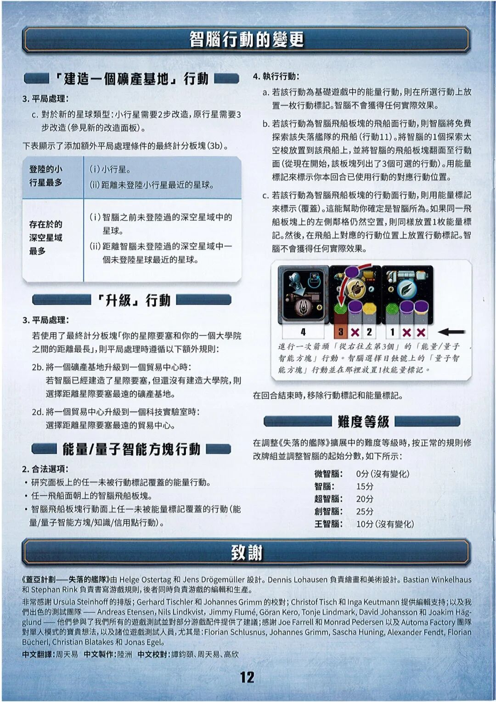
智腦行動的變更
- 合法選項:
- 研究面板上的任一未被行動標記覆蓋的能量行動。
- 任一飛船面朝上的智腦飛船板塊。
- 智腦飛船板塊行動面上任一未被能量標記覆蓋的行動(能量/量子智能方塊/知識/信用點行動)。
- 平局處理:
- c. 對於新的星球類型:小行星需要 2 步改造,原行星需要 3 步改造(參見新的改造面板)。
- 下表顯示了添加額外平局處理條件的最終計分板塊(3b):
- 登陸的小行星最多:(i) 小行星。(ii) 距離未登陸小行星最近的星球。
- 存在於〔?〕的深空星域最多:(i) 智腦之前未登陸過的深空星域中的星球。(ii) 距離智腦未登陸過的深空星域中一個未登陸星球最近的星球。
- 若使用了最終計分板塊「你的星際要塞和你的一個大學院之間的距離最長」,則平局處理時遵循以下額外規則:
- 2b. 將一個礦產基地升級到一個貿易中心時:若智腦已經建造了星際要塞,但還沒有建造大學院,則挑選距離星際要塞最遠的礦產基地。
- 2d. 將一個貿易中心升級到一個科技實驗室時:挑選距離星際要塞最遠的貿易中心。
- 執行行動:
- a. 若該行動為基礎遊戲中的能量行動,則在所選行動上放置一枚行動標記。智腦不會獲得任何實際效果。
- b. 若該行動為智腦飛船板塊的飛船面行動,則智腦將免費探索該失落艦隊的飛船(行動 11)。將智腦的 1 個探索太空梭放置到該飛船上,將智腦的飛船板塊翻面至行動面(現在開始,該板塊列出了 3 個可選的行動)。用能量標記來標示你本回合已使用行動的對應行動位置。
- c. 若該行動為智腦飛船板塊的行動面行動,則用能量標記來標示(覆蓋)。這能幫助你確定是智腦所為。如果同一飛船板塊上的左側格仍然空置,則同樣放置 1 枚能量標記。然後,在飛船上對應的行動位置上放置行動標記。智腦不會獲得任何實際效果。
- 進行一次箭頭「從右往左第 3 個」的「能量/量子智能方塊」行動。智腦挑選日蝕號上的「量子智能方塊」行動,在那裡放置 1 枚能量標記。
- 在回合結束時,移除行動標記和能量標記。
難度等級
在調整《失落的艦隊》擴展中的難度等級時,按正常的規則修改牌組調整智腦的起始分數,如下所示:
| 難度等級 | 起始分數 |
|---|---|
| 微智腦 | 0 分(沒有變化) |
| 智腦 | 15 分 |
| 超智腦 | 20 分 |
| 創智腦 | 25 分 |
| 王智腦 | 10 分(沒有變化) |
致謝
《蓋亞計劃——失落的艦隊》由 Helge Ostertag 和 Jens Drogemüller 設計。Dennis Lohausen 負責繪畫和美術設計。Bastian Winkelhaus 和 Stephan Rink 負責書寫遊戲規則,後者同時負責遊戲的編輯和生產。
非常感謝 Ursula Steinhoff 的排版;Gerhard Tischler 和 Johannes Grimm 的校對;Christof Tisch 和 Inga Keutmann 提供編輯支持;以及我們出色的測試——Andreas Etensen、Nils Lindkvist、Jimmy Flume、Göran Kero、Tonje Lindmark、David Johansson 和 Joakim Hagglund——他們參與了我們所有的遊戲測試並對部分遊戲配件提供了建議;感謝 Joe Farrell 和 Monrad Pedersen 以及 Automa Factory 團隊對單人模式的寶貴想法,以及各位遊戲測試人員,尤其是:Florian Schlusnus、Johannes Grimm、Sascha Huning、Alexander Fendt、Florian Bucherl、Christian Blatakes 和 Jonas Egel。
中文翻譯:周天易 / 中文製作:〔?〕洲 / 中文校對:譚〔?〕頤、周天易、高欣
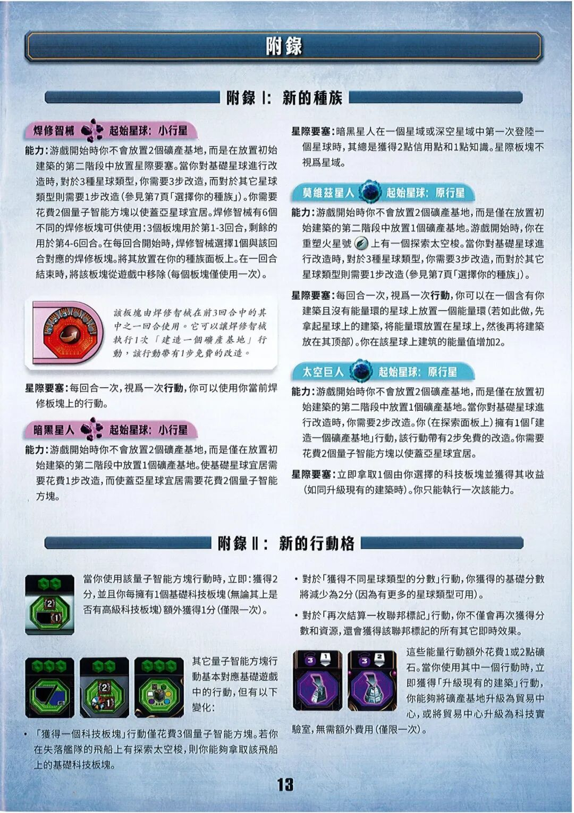
附錄 I:新的種族
焊修智械
- 起始星球:小行星
- 能力:遊戲開始時你不會放置 2 個礦產基地,而是在放置初始建築的第二段中放置星際要塞。當你對基礎星球進行改造時,對於 3 種星球類型,你需要 3 步改造,而對於其它星球類型則需要 1 步改造(參見第 7 頁「挑選你的種族」)。你需要花費 2 個量子智能方塊以使蓋亞星球宜居。焊修智械有 6 個不同的焊修板塊可供使用:3 個板塊用於第 1-3 回合,剩餘的用於第 4-6 回合。在每回合開始時,焊修智械挑選 1 個與該回合對應的焊修板塊,將其放置在你的種族面板上。在一回合結束時,將該板塊從遊戲中移除(每個板塊僅使用一次)。
- 星際要塞:每回合一次,視為一次行動,你可以使用你當前焊修板塊上的行動。
〔圖注〕該板塊由焊修智械在前 3 回合中的其中之一回合使用。它可以〔讓〕焊修智械執行 1 次「建造一個礦產基地」行動,該行動帶有 1 步免費的改造。
莫維茲星人
- 起始星球:原行星
- 能力:遊戲開始時你不會放置 2 個礦產基地,而是在放置初始建築的第二段中放置 1 個礦產基地。遊戲開始時,你在重塑火星號上有一個探索太空梭。當你對基礎星球進行改造時,對於 3 種星球類型,你需要 3 步改造,而對於其它星球類型則需要 1 步改造(參見第 7 頁「挑選你的種族」)。
- 星際要塞:每回合一次,視為一次行動,你可以在一個含有你建築且沒有能量環的星球上放置一個能量環(若如此做,先拿起星球上的建築,將能量環放置在星球上,然後再將建築放在其頂部)。你在該星球上建築的能量值增加 2。
太空巨人
- 起始星球:原行星
- 能力:遊戲開始時你不會放置 2 個礦產基地,而是在放置初始建築的第二段中放置 1 個礦產基地。當你對基礎星球進行改造時,你需要 2 步改造。你(在探索面板上)有 1 個「建造一個礦產基地」行動,該行動帶有 2 步免費的改造。你需要花費 2 個量子智能方塊以使蓋亞星球宜居。
- 星際要塞:立即拿取 1 個由你挑選的科技板塊並獲得其收益(如同升級現有的建築時)。你只能執行一次該能力。
暗黑星人
- 起始星球:小行星
- 能力:遊戲開始時你不會放置 2 個礦產基地,而是在放置初始建築的第二段中放置 1 個礦產基地。使基礎星球宜居需要花費 1 步改造,而使蓋亞星球宜居需要花費 2 個量子智能方塊。
- 星際要塞:暗黑星人在一個星域或深空星域中第一次登陸一個星球時,其總是獲得 2 點信用點和 1 點知識。星際板塊不視為星域。
附錄 II:新的行動格
- 當你使用該量子智能方塊行動時,立即:獲得 2〔?〕……
- 對於「獲得不同星球類型的分數」行動,你獲得的基礎分數將減少為 2 分(因為有更多的星球類型可用)。〔且?〕你每有 1 個基礎科技板塊(無論其上是否有高級科技板塊)額外獲得 1 分(限一次)。
- 對於「再次結算一枚聯邦標記」行動,你不會再次獲得分數和資源,還會獲得該聯邦標記的所有其它即時效果。
- 這些能量行動額外花費 1 或 2 點礦石。當你使用其中一個行動時,立即獲得「升級現有的建築」行動,你能將礦產基地升級為貿易中心,或將貿易中心升級為科技實驗室,無需額外費用(限一次)。
- 其它量子智能方塊行動基本對應基礎遊戲中的行動,但有以下變化:「獲得一個科技板塊」行動花費 3 個量子智能方塊。若你在失落艦隊的飛船上有探索太空梭,則你能拿取該飛船〔上的基礎科技板塊……本頁行動格細則跨頁續〕
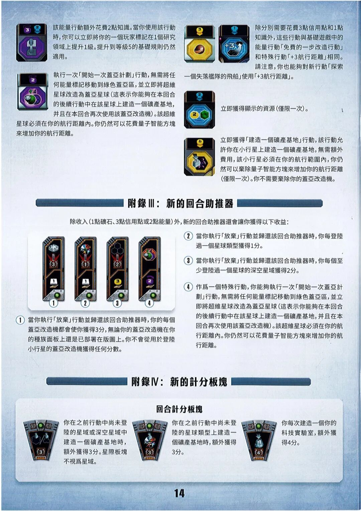
(續上頁,新的行動格)
- 該能量行動額外花費 2 點知識。當你使用該行動時,你可以立即將你的一個玩家標記在 1 個研究領域上提升 1 級。提升到等級 5 的基礎規則仍然適用。
- 除分別需要花費 3 點信用點和 1 點知識外,這些行動與基礎遊戲中的能量行動「免費的一步改造行動」和特殊行動「+3 航行距離」相同。請注意,你也能對新行動「探索一個失落艦隊的飛船」使用「+3 航行距離」。
- 執行一次「開始一次蓋亞計劃」行動,無需將任何能量標記移動到蓋亞區,立即將超維星球改造為蓋亞星球(這表示你能夠在本回合的後續行動中在該星球上建造一個礦產基地,並且在本回合再次使用該蓋亞改造機)。該超維星球必須在你的航行距離內。你仍然可以花費量子智能方塊來增加你的航行距離。
- 立即獲得顯示的資源(限一次)。
- 立即獲得「建造一個礦產基地」行動,該行動允許你在小行星上建造一個礦產基地,無需額外費用,該小行星必須在你的航行範圍內,你仍然可以花費量子智能方塊來增加你的航行距離(僅限一次)。你不需要移除你的蓋亞改造機。
附錄 III:新的回合助推器
除收入(1 點礦石、3 點信用點或 2 點能量)外,新的回合助推器還會給你獲得以下收益:
- 當你執行「放棄」行動歸還該回合助推器時,你每登陸過一個星球類型獲得 1 分。
- 當你執行「放棄」行動歸還該回合助推器時,你每個至少登陸過一個星球的深空星域獲得 2 分。
- 作為一個特殊行動,你能夠執行一次「開始一次蓋亞計劃」行動,無需將任何能量標記移動到蓋亞區,立即將超維星球改造為蓋亞星球(這表示你能夠在本回合的後續行動中在該星球上建造一個礦產基地,並且在本回合再次使用該蓋亞改造機)。該超維星球必須在你的航行距離內。你仍然可以花費量子智能方塊來增加你的航行距離。
- 當你執行「放棄」行動歸還該回合助推器時,你的每個蓋亞改造機都會使你獲得 3 分,無論你的蓋亞改造機在你的種族面板上還是已部署在版圖上。你不會為用於登陸小行星的蓋亞改造機獲得任何分數。
附錄 IV:新的計分板塊
回合計分板塊
- 你每次建造一個你的科技實驗室,額外獲得 4 分。
- 你在之前行動中尚未登陸的星域或深空星域中〔登陸的星球類型上〕建造一個礦產基地時,額外獲得 3 分。星際板塊不視為星域。
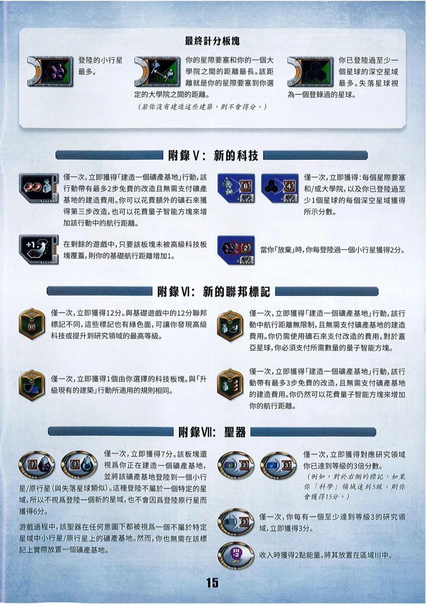
最終計分板塊
- 登陸的小行星最多。
- 你已登陸過至少一個星球的深空星域最多。失落星球視為一個登陸過的星球。
- 你的星際要塞和你的一個大學院之間的距離最長。該距離就是你的星際要塞到你選定的大學院之間的距離。(若你沒有建造這些建築,則不會得分。)
附錄 V:新的科技
- 僅一次,立即獲得「建造一個礦產基地」行動,該行動帶有最多 2 步免費的改造且無需支付礦產基地的建造費用。你可以花費額外的礦石來獲得第三步改造,也可以花費量子智能方塊來增加該行動中的航行距離。
- 一次,立即獲得:每個星際要塞和/或大學院,以及你已登陸過至少 1 個星球的每個深空星域,獲得〔圖示〕所示分數。
- 當你「放棄」時,你每登陸過一個小行星獲得 2 分。
- 在剩餘的遊戲中,只要該板塊未被高級科技板塊覆蓋,你的基礎航行距離增加 1。
- 僅一次,立即獲得「建造一個礦產基地」行動,該行動中航行距離無限制,且無需支付礦產基地的建造費用。你仍需使用礦石來支付改造的費用。對於蓋亞星球,你必須支付所需數量的量子智能方塊。
- 僅一次,立即獲得「建造一個礦產基地」行動,該行動帶有最多 3 步免費的改造,且無需支付礦產基地的建造費用。你仍然可以花費量子智能方塊來增加你的航行距離。
- 僅一次,立即獲得 1 個由你挑選的科技板塊。與「升級現有的建築」行動所適用的規則相同。
附錄 VI:新的聯邦標記
- 僅一次,立即獲得 12 分。與基礎遊戲中的 12 分聯邦標記不同,這些標記也有綠色面,可讓你發現高級科技或提升到研究領域的最高等級。
附錄 VII:聖器
- 僅一次,立即獲得 7 分。該板塊還〔?〕。
- 僅一次,立即獲得對應研究領域你已達到等級的 3 倍分數。(例如,對於右側的標記,如果你「科學」領域達到 5 級,則你會獲得 15 分)
- 僅一次,視為你正在建造一個礦產基地,將該礦產基地登陸到一個小行星/原行星(與失落星球類似)。這種登陸不屬於一個特定的星域,所以不視為登陸一個新的星域,也不會因為登陸原行星而獲得 6 分。遊戲過程中,該聖器在任何意圖下都被視為一個不屬於特定星域中小行星/原行星上的礦產基地。然而,你也無需在該標記上實際放置一個礦產基地。
- 僅一次,你每有一個至少達到等級 3 的研究領域,立即獲得 3 分。
- 收入時獲得 2 點能量。將其放置在區域 III 中。
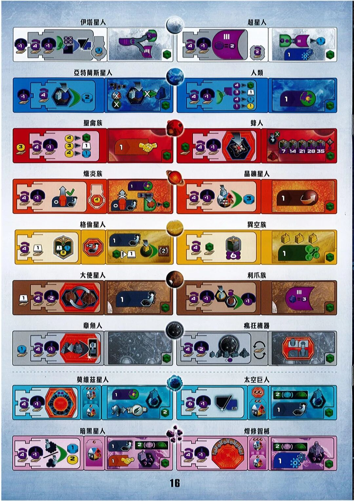
種族概覽
全部十八個種族的概覽,以幫助你進行選擇:
基礎遊戲種族(14 個):伊塔星人、超星人、人類、亞特蘭斯星人、蜂人、聖禽族、炎族、晶星人、格倫星人、翼空族、大使星人、利爪族、章魚人、瘋狂機器。
擴展新種族(4 個):莫維茲星人、太空巨人、暗黑星人、焊修智械。
〔圖:18 個種族面板縮略圖,附各自母星類型/起始調整/能力概要角標〕